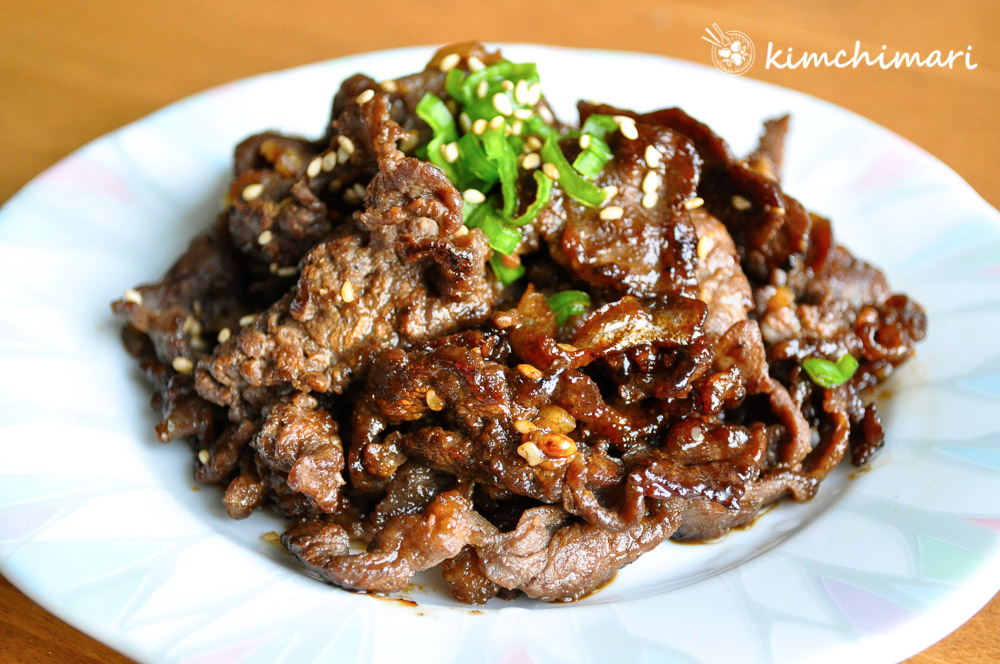

Bulgogi

Description
Bulgogi 불고기 or Korean BBQ Beef literally means "fire 불 meat 고기" in
Korean. It is an amazing grilled Korean BBQ beef dish that will make
anyone a fan of Korean food once you taste it.
Ingredients
- 1 lb Thinly sliced sirloin
Marinade
- 3 Tbsp soy sauce
- 2 Tbsp light brown sugar
- 1 Tbsp honey
- 2 Tbsp rice cooking wine or red wine
- 1 Tbsp sesame oil
- 2 Tbsp minced garlic
- 1 tsp ground black pepper
- 2 tsp toasted sesame seeds
- 1 Tbsp chopped green onion
- 2 Tbsp pear, puree
Steps
-
Make sauce by mixing all of the marinade ingredients together except for
any optional vegetables such as onions or mushrooms.
-
Mix in the bulgogi beef into the sauce prepared above - in a bowl big
enough to hold the beef. Make sure the sauce is well mixed with the
beef. You will need to use your hands here and just massage everything
together.
-
Heat up your favorite frying pan on high heat and just pan fry/stir fry
the meat until it's slightly brown on both sides.